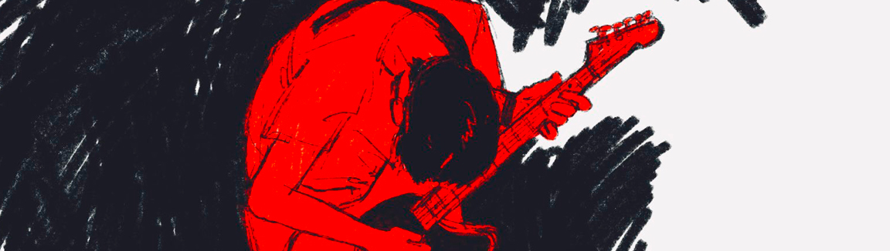
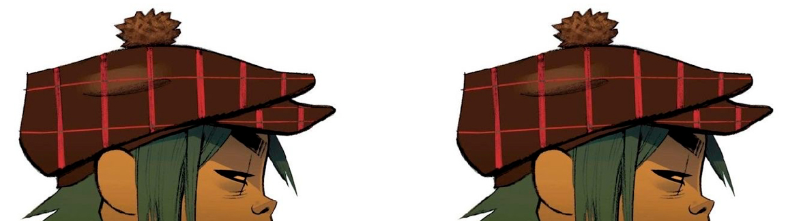
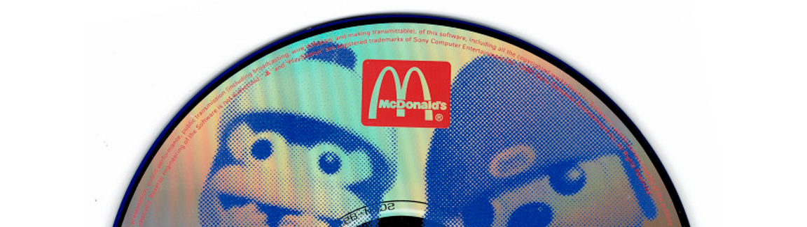
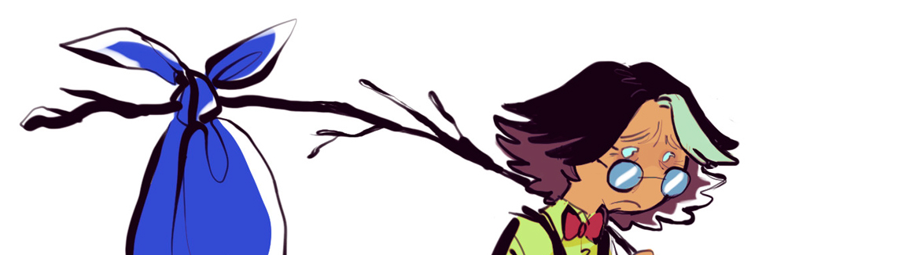
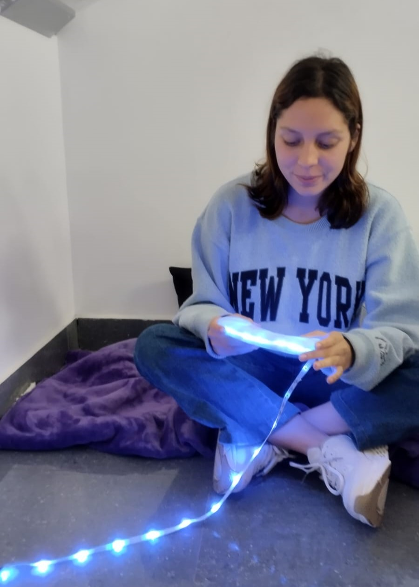

Bitácora

Acá registraré el progreso de mis clases.
Me gustaría poder hablar sobre una especie de resumen o diario semanal, sobre mis clases., pero no lo haré.
Tratare de mantenerlo unicamente de cosas que me pasan a lo largo del curso, no quiero que esto se vuelva tan personal...
Semana 3

Bueno, al parecer empezamos con esta especie de bitácora...
No sé ni cómo, conseguí abrir el programa con la laptop de clase, pero siento que puedo entender este programa, usando las plantillas por lo menos. Me recuerda bastante a las pantillas que puedes agregarle a tu web en Tumblr, asi que no creo que sea tan complicado si ya hice algo parecido antes.
Ví a mis amigos Eiki, Adriano, Ana y hablé con ellos durante la clase. nos reímos un poco, solo vino Camilo porque Jimena estaba mal de la garganta. También faltó alguien más, me recuerda a alguien. Mis demás compañeros están bastante bien. Tienen buenas vibras :D
Semana 4

Este viernes fue un poco raro, debo decir la verdad... No nos organizamos bien para las entrevistas, por mi parte solo vengo tres veces a la semana y los tiempos son muy limitados, como para encontrar algún amigue que esté disponible para ayudarte y a la vez grabar...
Aunque no estuvo tan mal, vi a un compañero pero me dio penita, porque veía como trataba de avanzar con su web del programa y el profe ni cuenta, lo llamó como dos veces, pero cómo habla tan alto... era obvio que no lo iba a escuchar... pero al final el profe si lo escucho y lo ayudó un poco.
De todas formas, antes de que Ana y yo entraramos en pánico porque solo teniamos la entrevista que solo ella había podido conseguir, el profe nos dio la opción para poder hacer las entrevistas en lo que quedaba de clase, asi que nos fuimos a hacerlas. Estuvimos un rato en el piso seis y le pregunté a algunas personas si nos podían ayudar. Ana grabó porque creo que a ella le daba roche preguntar, pero bueno. Al ratito ya con seis entrevistas más que teniamos íbamos a regresar al aula, pero de repente aparecieron Isa y Fran, amigues míos de CAM y como siempre son tan buena onda nos ayudaron, no es la primera vez que Fran me ayuda en algún trabajo para tls JAJAJA, ojalá los vea más seguido porque son muy buenos amigues. Algo que se me hizo curioso, es que Adriano también conoce a Fran, cuando el ciclo pasado me dijo que ni idea quién era, al parecer se conocieron en verano? Que bueno!!! Fue bien curioso verles interactuar, hasta parecía que se conocieran de tiempo! Al final nos despedimos y volvimos a clase, siguió como si nada y terminó la clase, justo me iba y escuché que preguntaban por un integrante del grupo de Eiki y el que faltaba recién se enteraba cuál era su grupo, solo voy a opinar que, pobre Eiki, ojala hubiera podido estar en nuestro grupo, pero a si es la vida a veces...
Semana 5

Esta semana no tratara sobre la clase presencial ya que tengo que terminar esto antes de la entrega? Creo que si, no?
No dije esto antes, pero me va mejor el github en mi casa creo, en mi compu tengo todo acomodado y como ya esta vinculado todo. De todas formas, el lunes nos toco exponer el trabajo, ya no tengo mucho que decir sobre mi grupo, pero al menos se logro, de todas formas ya tenemos un par de cosas en mente para seguir avanzando el proyecto, asi que todo bien.
Las exposiciones estuvieron bastante bien, espero que todo vaya bien para los demas también.
Semana 6

En esta semnana el grupo avanzo parte del proyecto que tenemos con Lumin!
Ademas en esta semana se unio Sebastian a nuestro equipo! Es bueno tener a un integrante mas en el equipo!
Presentamos bocetos y andamos decidiendo cual quedara para nuestra lampara
Semana 7

Esta semana nos dedicamos a darle vueltas al boceto de nuestro prototipo
Elegimos el de Jimena como base, ademas de verse muy modernos, es minimalista!.
Semana 8

En el transcurso de esta semana nos organizamos para poder armar nuestro prototipo
Hable con mis compañeros de equipo para ver que materiales ibamos a necesitar mientras estaba en Tai Loy, decidimos usar ceramica en frio.
Llegue temprano a clase y cuando empezamos la clase realizamos el prototipo, pero no tomamos en cuenta que demoria en secar por lo que lo dejamos en el salon.
Semana 9

En esta semana llegamos tempranisimo a Tls y nos reunimos con el equipo
Nos dedicamos unicamente a hacer el testeo del prototipo con los usuarios y salio bastante bien!
Con los comentarios recibidos, podremos tomarlos en cuenta y asi mejorarlo!
Semana 10

Otra vez semana 10, fue un promedio bastante largo pero divertido en general
Con el equipo ya estamos listos para poder presentar nuestro trabajo.
Semana 11

Estuvimos revisando un poco lo del prototipo en 3d, pero habian varios aspectos que modificar
Ademas como mi equipo estaba bastante perdido en temas del 3d fui a clase de mi amigo, que estaban viendo ese tema
Debo decir que no estaba segura si entrar o no, pero mi amigo me convencio de que todo estaria bien. Y fue una clase muy entretenida.
Semana 12
No recuerdo mucho lo que paso en esta semana la verdad, pero vimos un poco sobre el internet de la cosas.
En esta semana tambien me enferme. Cosas que pasan.
Al menos estuve mas presente en la clase.
Semana 13
En esta semana, por fin nos reunimos para ir a ver los componentes, era la primera vez que caminaba por esa parte del centro de Lima, pero estuvo bien, estaba con Jimena y Ana. Luego Fuimos a Gamarra para comprar la tela para el peluche del Lumin.
Fue todo muy cansado, inclusive ni si quiera habia comido nada en todo el dia, no me sentia tan bien y tenia sueño. Pero la amistad lo primero y tenian que presentar prototipo en el que les estuve ayudando.
Por cierto ya habia avanzado el 3d del Lumin en Onshape, pero hubieron algunas cosas en las que tuve que pedir ayuda, este ciclo me esta enseñando a no tener miedo de preguntar cuando no entiendo algo jajajaja. Luego hubieron situaciones curiosas y graciosas, estuvo bien creo.
Ya a final de semana, teniamos el prototipo, listo para imprimir, le dije al profe que ya sabia donde podia intentar imprimirlo.
Semana 14
Todo en esta semana fue como un desborde de emociones. Ya me iba a terminar acostumbrando a salir tanto de mi casa. Necesitaba hacer unas pruebas para un proyecto que tenia en mente.
Al mismo tiempo, ya estabamos listos para imprimir, ya teniamos el 3D y el filamento que habiamos comprado. Volvi a ir a la clase de mi amigo, para preguntarle al profe si podia usar la impresora. Todo bien en ese momento, senti que algo raro paso entre medias, pero bueno, necesitaba realmente imprimir el Lumin. Al comienzo me senti bastante mal por pedir ayuda de nuevo, no tenia ni idea como conectar la Dreamer o como dejarla para imprimir, hasta que me explicaron y me ayudaron, pero se sentia extraño la verdad. Todo empezo muy mal, desde que saque el filamento de la bolsa y quise cargarla en la impresora, se rompio el filamento, yo sabia que habia algo mal. Pero el profesor trataba de ser positivo, el ambiente se volvió más tranquilo mientras mas fallaba la impresión. Realmente era el filamento y al final en tanto rato esperando, solo pudimos imprimir una especie de base, de todas formas fue divertido y lindo, era la primera vez que imprimia algo en mi vida.
Un dia antes de la clase volvimos a intentar imprimir el Lumin, pero esta vez estuvimos Ana y yo junto a nuestro profe como ayuda! Y con el filamento correcto esta vez, que dificil la vida del estudiante promedio. Y esta vez salio todo bien! Fue muy bonito todo y por lo menos el prototipo de Lumin se hizo realidad! No volvió a morir :(, a pesar de no tener fe al principio todo salio bien. Ya al dia siguiente antes de la clase, sacamos el Lumin de la impresora y fue muy bonito la verdad, ya hasta me sentia bien con mi propio esfuerzo, pero de cierta forma faltaban los componentes, tenia un mal presentimiento, no solo por ello.
Semana 15
Semana 15... Una más y termina todo. Siento que estoy terminando todo como empezó todo, con ganas de que simplemente se termine, se realmente como comenzó todo. Como terminara? Bien? Mal? No lo sé, pero bueno... Será esto lo que me gustaria estar haciendo en el futuro? Quizas? Al menos me divertí y no estaba tan metida en mis pensamientos.
Ya no se que estoy haciendo la verdad, al menos mi parte, bueno mi mayor responsabilidad en el equipo ya terminó. Tuve otro lunes demasiado movido, empece el dia con un pensamiento y termine con otro, la vida es rara e impredecible a veces. Qué será de mí luego? Quién sabe... Cómo llegue a involucrarme en un proyecto en el que no pintaba nada? Quién sabe? Aún hay cosas que no me cuadran.
En el transcurso de la semana también pasaron cosas, entre ellas mi cumpleños. Pero lo importante es ya el Lumin estaba 10/10, pero luego no supimos que paso y termino muriendo de nuevo :( Ya no se que más decir la verdad. Aun quiero dejarle el beneficio de la duda a lo que queda. El viernes no hice mucho la verdad, tampoco tenia los animos. Estuve ayudando a mis compañeros de clase, al menos de este ciclo me llevo bastantes enseñanzas. Y de cierta forma me alegra poder ayudarlos, a pesar de ya no saber que es lo que realmente estoy haciendo o pensando, por fin volvi a la desilusion y desmotivación de todo jajaja. Espero la proxima semana mejore, pero y si no hay nada que lo haga?